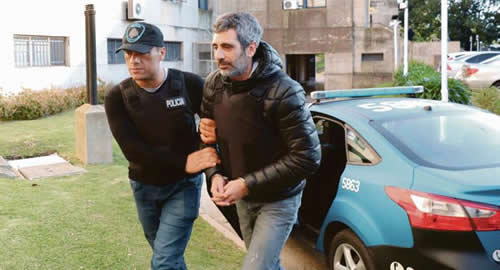

Real Chubut - Agencia de Noticias


Baratta, ante la Cámara apuntó a los empresarios y reveló datos de las contratistas de los “cuadernos”

ROMPIÓ EL SILENCIO AYER EN LA AUDIENCIA POR LAS APELACIONES DE BONADIO - Señaló a Techint, Iecsa, Roggio y Pescarmona como principales beneficiarios de obra pública K. Responsabilizó a Rocca por su seguridad y “advirtió” a Calcaterra. Subrayó contradicción de Wagner y rebatió a los “arrepentidos”.
Roberto Baratta rompió el silencio por primera vez en el marco de la causa "cuadernos". Lo hizo en su propia voz, en un alegato ante la Cámara Federal por las apelaciones a los procesamientos dictados por el juez Claudio Bonadio. Aunque sin declararse "arrepentido" y negando los cargos, hizo expresas menciones a empresarios procesados y a firmas contratistas de obra pública y energía, con especial foco en Techint y en su CEO, Paolo Rocca, a quien incluso responsabilizó por su seguridad personal y la de su familia. La declaración que forma parte de su estrategia de defensa resultó explosiva por su contenido y por los elementos que adjuntó como prueba. Los camaristas Leopoldo Bruglia y Pablo Bertuzzi le permitieron al exN°2 de Julio de Vido explayarse sobre diversos aspectos de sus funciones y reuniones desde la Subsecretaría de Gestión y Control del Ministerio de Planificación Federal. Además, rebatió cada una de las "confesiones" de los imputados colaboradores y se centró en las contradicciones de quienes declararon ante el fiscal Carlos Stornelli.
Con 12 hojas manuscritas que leyó ante los camaristas y un ranking de contratistas durante el kirchnerismo, entre las cuales aparecen en el podio las firmas cuyos dueños declararon haber tenido pocas obras durante el Gobierno anterior, Baratta inició su contraataque de amplio espectro, donde nombro alrededor de 70 personas. Apuntó a los empresarios, a los arrepentidos, a los exfuncionarios y a su exchofer Oscar Centeno y a la expareja de este, Hilda Horovitz. Las audiencias en la Cámara terminarán el 31 de este mes.
Empresario por empresario, Baratta habló de Juan Carlos De Goycoechea (Isolux), Javier Sánchez Caballero (Iecsa), Aldo Roggio, Carlos Wagner (Esuco), Armando Loson (Albanesi), Enrique Pescarmona, Luis Betnaza (Techint), Juan Chediack y Gabriel Romero. Negó sus versiones y señaló quienes, como Wagner, declararon en "cuadernos" y dieron una versión opuesta y simultánea en los expedientes abiertos por Odebrecht, donde también aparecen imputados. Subrayó la falsedad de los aportes de campaña forzosos y también del pago para obtener decretos presidenciales que en algunos casos mutó a sobornos para obtener obra pública. Fue el caso de Pescarmona quien admitió pago por una obra puntual, a lo que Baratta rebatió mostrando las sucesivas licitaciones a las que se habían presentado de manera constante. Hizo además un análisis de cierto desfasaje cronológico de los escritos de Centeno. En el caso de Techint con la amenaza de corte de gas, apuntó que era verano y no había demanda. No fue la única alusión al grupo conducido por Rocca: además de señalar que fue el contratista N°1 durante la década kirchnerista, consideró que hablar de él lo podría poner en peligro y responsabilizó a su CEO por cualquier cosa que pudiera pasarle a él o a su familia a partir de la declaración de ayer.
Sobre los escritos de Centeno afirmó que evidentemente fueron confeccionados con el fin de extorsionarlo según lo que Horovitz declaró, aunque eso nunca se llevó a cabo. Destacó su fragilidad cronológica: Walter Fagyas (hoy detenido) es su amigo personal y padrino de sus hijos; solo aparece, en una década, subiendo 8 veces al vehículo de Baratta en ese lapso. Dedicó un párrafo a Ángelo Calcaterra que pareció un aviso. Admitió que mantenía una excelente relación personal y humana con el primo presidencial pero una pésima relación empresarial porque Iecsa era "incumplidora serial" de plazos de obra. No se explayó. "Mi estirpe calabresa me persuade de llamarme a silencio", afirmó el exfuncionario en modo incógnita.
A José López, Claudio Uberti y Juan Manuel Abal Medina los trató de "mentirosos, cobardes y traidores". Del primero aseguró que es la quinta versión que da sobre el origen de los bolsos en su poder, mientras que quedó en evidencia que tanto Ernesto Clarens como Wagner y López eran quienes reconocieron que orquestaban todo el mecanismo de recaudación en sus respectivas áreas, aunque Bonadio solo los procesó como miembros de la asociación ilícita.
Fuente: Ambito